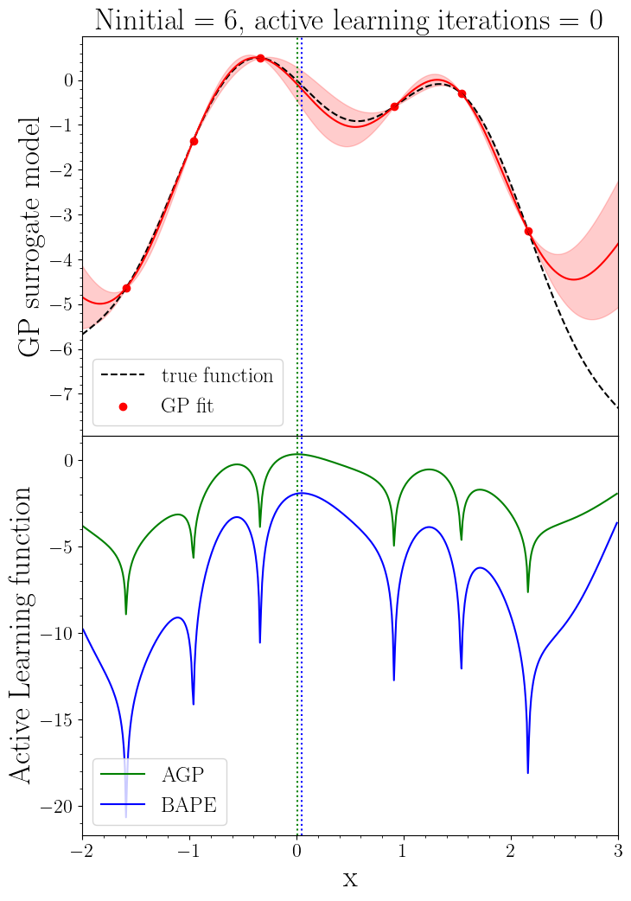
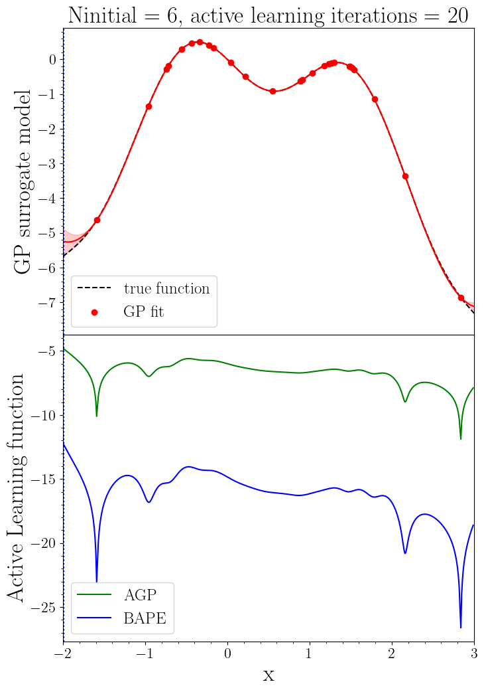
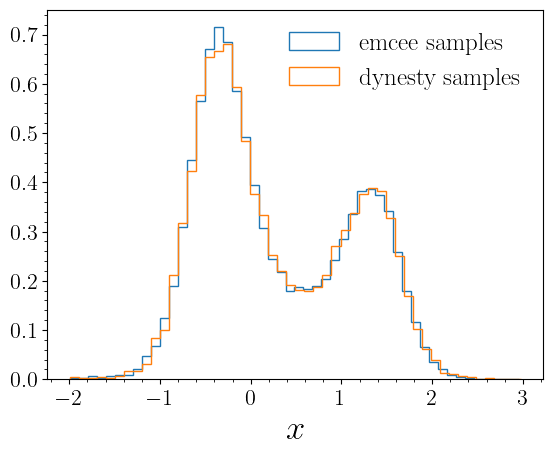

This notebook is available on GitHub.
Interactive online version:

Visualize Active Learning¶
In this example, we demonstrate the GP fitting process on a 1D function and visualize the active learning function.
[1]:
import numpy as np
import matplotlib.pyplot as plt
import alabi
from alabi.core import SurrogateModel
import alabi.utility as ut
[2]:
def test1d_fn(theta):
theta = np.asarray(theta)
return -np.sin(3*theta) - theta**2 + 0.7*theta
# domain of the function
bounds = [(-2,3)]
[4]:
np.random.seed(7)
sm = SurrogateModel(lnlike_fn=test1d_fn,
bounds=bounds,
savedir=f"results/test1d")
sm.init_samples(ntrain=6, sampler="sobol")
sm.init_gp(kernel="ExpSquaredKernel",
fit_amp=True,
fit_mean=True,
white_noise=-12,
gp_scale_rng=[-1,1],
theta_scaler=alabi.no_scaler,
y_scaler=alabi.no_scaler)
def bape(xgrid):
return -np.array([ut.bape_utility(np.array([x]), sm._y, sm.gp, sm.bounds) for x in xgrid])
def agp(xgrid):
return -np.array([ut.agp_utility(np.array([x]), sm._y, sm.gp, sm.bounds) for x in xgrid])
---------------------------------------------------------------------------
AttributeError Traceback (most recent call last)
Cell In[4], line 8
3 sm = SurrogateModel(lnlike_fn=test1d_fn,
4 bounds=bounds,
5 savedir=f"results/test1d")
7 sm.init_samples(ntrain=6, sampler="sobol")
----> 8 sm.init_gp(kernel="ExpSquaredKernel",
9 fit_amp=True,
10 fit_mean=True,
11 white_noise=-12,
12 gp_scale_rng=[-1,1],
13 theta_scaler=alabi.no_scaler,
14 y_scaler=alabi.no_scaler)
16 def bape(xgrid):
17 return -np.array([ut.bape_utility(np.array([x]), sm._y, sm.gp, sm.bounds) for x in xgrid])
File ~/Tresorit/packages/alabi/alabi/core.py:967, in SurrogateModel.init_gp(self, kernel, fit_amp, fit_mean, fit_white_noise, white_noise, gp_scale_rng, gp_amp_rng, uniform_scales, overwrite, theta_scaler, y_scaler, gp_opt_method, gp_nopt, optimizer_kwargs, hyperopt_method, regularize, amp_0, mu_0, sigma_0, cv_folds, cv_scoring, cv_n_candidates, cv_stage2_candidates, cv_stage2_width, cv_stage3_candidates, cv_stage3_width, cv_weighted_factor, multi_proc)
965 # Save scaled training data for GP fitting
966 self._theta_test = self.theta_scaler.transform(self.theta_test)
--> 967 self._y_test = self.y_scaler.transform(self.y_test.reshape(-1, 1)).flatten()
968 self._theta_train = self._theta
969 self._y_train = self._y
AttributeError: 'list' object has no attribute 'reshape'
Define a plot function for inspecting the current GP fit so that we can compare the fit before and after active learning training.
[4]:
def plot_current_gp(sm):
xgrid = np.arange(sm.bounds[0][0], sm.bounds[0][1]+.1, .01)
mu, var = sm.gp.predict(sm._y, xgrid, return_cov=False, return_var=True)
eval_bape = bape(xgrid)
eval_agp = agp(xgrid)
opt_bape = xgrid[np.argmax(eval_bape)]
opt_agp = xgrid[np.argmax(eval_agp)]
title = f"Ninitial = {sm.ninit_train}, active learning iterations = {len(sm._theta) - sm.ninit_train}"
fig, axs = plt.subplots(2, 1, figsize=[8,12], sharex=True)
plt.subplots_adjust(hspace=0)
axs[0].plot(xgrid, test1d_fn(xgrid), color="k", linestyle="--", label="true function")
axs[0].scatter(sm._theta, sm._y, color="r", label="GP fit")
axs[0].plot(xgrid, mu, color="r")
axs[0].fill_between(xgrid, mu - np.sqrt(var), mu + np.sqrt(var), color="r", alpha=0.2)
axs[1].plot(xgrid, eval_agp, color="g", label="AGP")
axs[0].axvline(opt_agp, color="g", linestyle="dotted")
axs[1].axvline(opt_agp, color="g", linestyle="dotted")
axs[1].plot(xgrid, eval_bape, color="b", label="BAPE")
axs[0].axvline(opt_bape, color="b", linestyle="dotted")
axs[1].axvline(opt_bape, color="b", linestyle="dotted")
axs[0].set_xlim(sm.bounds[0][0], sm.bounds[0][1])
axs[0].set_ylabel("GP surrogate model", fontsize=25)
axs[1].set_ylabel("Active Learning function", fontsize=25)
axs[1].set_xlabel("x", fontsize=25)
axs[0].legend(loc="lower left", fontsize=18)
axs[1].legend(loc="lower left", fontsize=18)
axs[0].set_title(title, fontsize=25)
axs[0].minorticks_on()
axs[1].minorticks_on()
plt.close()
return fig
Visualize what the GP fit looks like after training with only 6 initial points. Vertical lines show the optimum value of the acquisition function where alabi will choose the next training point.
[5]:
plot_current_gp(sm)
[5]:

[ ]:
sm.active_train(niter=20, algorithm="bape", gp_opt_freq=10, obj_opt_method="nelder-mead")
Running 20 active learning iterations using bape...
50%|█████ | 10/20 [00:00<00:00, 11.56it/s]
Optimized 4 hyperparameters: (0.012s)
100%|██████████| 20/20 [00:01<00:00, 11.69it/s]
Optimized 4 hyperparameters: (0.013s)
Caching model to results/test1d/surrogate_model...
After 20 iterations the convergence is much better, particularly in the high likelihood regions which are most important for sampling.
[7]:
plot_current_gp(sm)
[7]:

[8]:
sm.run_emcee(like_fn=sm.surrogate_log_likelihood, nwalkers=20, nsteps=int(5e4))
No prior_fn specified. Defaulting to uniform prior with bounds [[-2 3]]
Running emcee with 20 walkers for 50000 steps on 128 cores...
100%|██████████| 50000/50000 [06:06<00:00, 136.39it/s]
burn-in estimate: 92
thin estimate: 23
Total samples: 43380
Mean acceptance fraction: 0.721
Mean autocorrelation time: 46.096 steps
Caching model to results/test1d/surrogate_model...
[9]:
sm.run_dynesty(like_fn=sm.surrogate_log_likelihood)
Initializing dynesty with self.surrogate_log_likelihood surrogate model as likelihood.
Initialized dynesty DynamicNestedSampler.
Running dynesty with 50 live points on 1 cores...
10281it [00:27, 373.98it/s, batch: 76 | bound: 0 | nc: 1 | ncall: 35840 | eff(%): 28.652 | loglstar: -1.299 < 0.500 < 0.279 | logz: -0.813 +/- 0.029 | stop: 0.988]
Caching model to results/test1d/surrogate_model...
Compare the posterior sampled using emcee vs dynesty:
[10]:
plt.hist(sm.emcee_samples.T[0], bins=50, histtype='step', density=True, label="emcee samples")
plt.hist(sm.dynesty_samples.T[0], bins=50, histtype='step', density=True, label="dynesty samples")
plt.xlabel("$x$", fontsize=25)
plt.legend(loc="upper right", fontsize=18, frameon=False)
plt.minorticks_on()
plt.show()

[ ]: